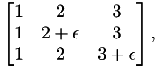
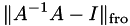

TooN aims to be a fast library, and may choose between one of several algorithms depending on the size of the arguments.
However TooN will never substitute a fast but numerically inferior algorithm. For example LU decomposition, Gaussian elimination and Gauss-Jordan reduction all have similar numerical properties for computing a matrix inverse. Direct inversino using Cramer's rule is significantly less stable, even for 3x3 matrices.
The following code computes a matrix inverse of the ill conditioned matrix:

using LU decomposition, Gauss-Jordan, pseudo-inverse with singular value decomposition and with Cramer's rule. The error is computed as:

The code is:
#include <TooN/TooN.h> #include <TooN/helpers.h> #include <TooN/LU.h> #include <TooN/GR_SVD.h> #include <TooN/gauss_jordan.h> #include <TooN/gaussian_elimination.h> #include <iomanip> using namespace TooN; using namespace std; Matrix<3> invert_cramer(const Matrix<3>& A) { Matrix<3> i; double t0 = A[0][0]*A[1][1]*A[2][2]-A[0][0]*A[1][2]*A[2][1]-A[1][0]*A[0][1]*A[2][2]+A[1][0]*A[0][2]*A[2][1]+A[2][0]*A[0][1]*A[1][2]-A[2][0]*A[0][2]*A[1][1]; double idet = 1/t0; t0 = A[1][1]*A[2][2]-A[1][2]*A[2][1]; i[0][0] = t0*idet; t0 = -A[0][1]*A[2][2]+A[0][2]*A[2][1]; i[0][1] = t0*idet; t0 = A[0][1]*A[1][2]-A[0][2]*A[1][1]; i[0][2] = t0*idet; t0 = -A[1][0]*A[2][2]+A[1][2]*A[2][0]; i[1][0] = t0*idet; t0 = A[0][0]*A[2][2]-A[0][2]*A[2][0]; i[1][1] = t0*idet; t0 = -A[0][0]*A[1][2]+A[0][2]*A[1][0]; i[1][2] = t0*idet; t0 = A[1][0]*A[2][1]-A[1][1]*A[2][0]; i[2][0] = t0*idet; t0 = -A[0][0]*A[2][1]+A[0][1]*A[2][0]; i[2][1] = t0*idet; t0 = A[0][0]*A[1][1]-A[0][1]*A[1][0]; i[2][2] = t0*idet; return i; } int main() { Matrix<3> singular = Data(1, 2, 3, 1, 2, 3, 1, 2, 3); for(double i=0; i < 1000; i++) { double delta = pow(0.9, i); //Make a poorly conditioned matrix Matrix<3> bad = singular; bad[2][2] += delta; bad[1][1] += delta; //Compute the inverse with LU decomposition Matrix<3> linv; LU<3> blu(bad); linv = blu.get_inverse(); //Compute the inverse with Gauss-Jordan reduction Matrix<3, 6> gj; Matrix<3> ginv; gj.slice<0,0,3,3>() = bad; gj.slice<0,3,3,3>() = Identity; gauss_jordan(gj); ginv = gj.slice<0,3,3,3>(); //Compute the pseudo-inverse with singular value decomposition GR_SVD<3,3> bsvd(bad); Matrix<3> sinv = bsvd.get_pinv(); Matrix<3> I = Identity; Matrix<3> einv = gaussian_elimination(bad, I); Matrix<3> cinv = invert_cramer(bad); double lerr = norm_fro(linv * bad + -1 * Identity); double gerr = norm_fro(ginv * bad + -1 * Identity); double serr = norm_fro(sinv * bad + -1 * Identity); double cerr = norm_fro(cinv * bad + -1 * Identity); double eerr = norm_fro(einv * bad + -1 * Identity); cout << setprecision(15) << scientific << delta << " " << lerr << " " << gerr << " " << serr << " " << eerr << " " << cerr << endl; } }
The direct inverse with Cramer's rule is about three times faster than the builtin routines. However, the numerical stability is considerably worse, giving errors 1e6 times higher in extreme cases: